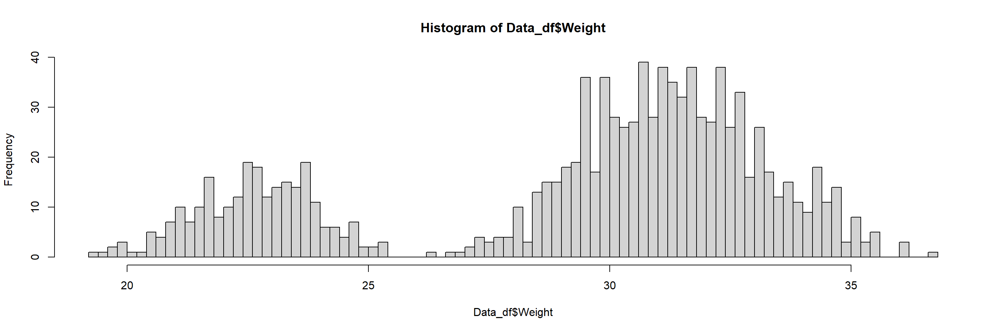
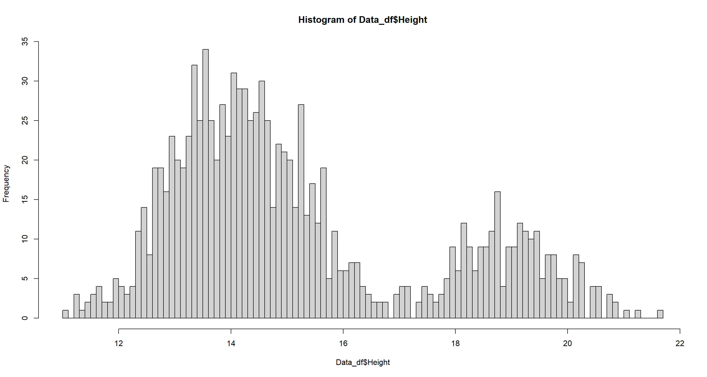

Data Handling and Data Assumptions
Theory
These are exercises and solutions meant as a compendium to my talk on Model Selection and Model Building.
I have prepared some Lecture Slides for this session.
Exercise
First, imagine we have been out and about collecting samples for our sparrow populations. You can find the data came home with after our field work season here. This data set contains errors/mis-specified data entry and other slip-ups that can happen as a part of data collection exercises. We need to fix that.
Preparing Our Procedure
The following three sections are what I consider to be essential parts of the preamble to any R-based analysis. I highly recommend clearly indicating these bits in your code.
More often than not, you will use variations of these code chunks whether you are working on data handling, data exploration or full-fledged statistical analyses.
Necessary Steps For Reproducibility
Reproducibility is the be-all and end-all of any statistical analysis, particularly in light of the peer-review process in life sciences.
rm(list = ls()) # clearing environment
Dir.Base <- getwd() # soft-coding our working directory
Dir.Data <- paste(Dir.Base, "Data", sep = "/") # soft-coding our data directory
Once you get into highly complex statistical analyses, you may wish to break up chunks of your analysis into separate documents. To ensure that remnants of an earlier analysis or analysis chunk do not influence the results of your current analysis, you may wish to empty R’s cache (Environment) before attempting a new analysis. This is achieved via the command rm(list=ls()).
Next, you need to remember the importance of soft-coding for the sake of reproducibility. One of the worst offences to the peer-review process in R-based statistics is the erroneous hard-coding of the working directory. The getwd() function shown above solves this exact problem. However, for this workaround to function properly you need to open the code document of interest by double-clicking it within its containing folder.
When using the xlsx package or any Excel-reliant process via R, your code will automatically run a Java process in the background. By default the Java engine is limited as far as RAM allocation goes and tends to fail when faced with enormous data sets. The workaround options(java.parameters = "-Xmx8g") gets rid of this issue by allocation 8 GBs of RAM to Java.
Packages
Packages are R’s way of giving you access to a seemingly infinite repository of functions.
# function to load packages and install them if they haven't been installed yet
install.load.package <- function(x) {
if (!require(x, character.only = TRUE)) {
install.packages(x)
}
require(x, character.only = TRUE)
}
package_vec <- c(
"dplyr" # we need this package to fix the most common data errors
)
sapply(package_vec, install.load.package)
## dplyr
## TRUE
Using the above function is way more sophisticated than the usual install.packages() + library() approach since it automatically detects which packages require installing and only install these thus not overwriting already installed packages.
Loading The Data
Loading data is crucial to any analysis in R. Period.
R offers a plethora of approaches to data loading and you will usually be taught the read.table() command in basic biostatistics courses. However, I have found to prefer the functionality provided by the xlsx package since most data recording is taking place in Excel. As this package is dependant on the installation of Java and RJava, we will settle on the base R function read.csv().
Data_df_base <- read.csv(file = paste(Dir.Data, "/SparrowData.csv", sep = ""), header = TRUE)
Data_df <- Data_df_base # duplicate and save initial data on a new object
Another trick to have up your sleeve (if your RAM enables you to act on it) is to duplicate your initial data onto a new object once loaded into R. This will enable you to easily remedy mistakes in data treatment without having to reload your initial data set from the data file.
Inspecting The Data
Once the data is loaded into R, you need to inspect it to make sure it is ready for use.
Assessing A Data Frame in R
Most, if not all, data you will ever load into R will be stored as a data.frame within R. Some of the most important functions for inspecting data frames (“df” in the following) in base R are the following four:
dim(df)returns the dimensions (Rows x Columns)of the data framehead(df)returns the first 6 rows of the data frame by default (here changed to 4)tail(df)returns the last 6 rows of the data frame by default (here changed to 4)View(df)opens nearly anyRobject in a separate tab for further inspection. Since we are dealing with an enormous data set here, I will exclude this function for now to save you from printing unnecessary pages.
dim(Data_df)
## [1] 1068 21
head(Data_df, n = 4)
## X Site Index Latitude Longitude Climate Population.Status Weight Height Wing.Chord Colour Sex Nesting.Site Nesting.Height Number.of.Eggs Egg.Weight Flock Home.Range Flock.Size
## 1 1 Siberia SI 60 100 Continental Native 34,05 12.87 6.67 Brown Male <NA> NA NA NA B Large 16
## 2 2 Siberia SI 60 100 Continental Native 34,86 13.68 6.79 Grey Male <NA> NA NA NA B Large 16
## 3 3 Siberia SI 60 100 Continental Native 32,34 12.66 6.64 Black Female Shrub 35.6 1 3.21 C Large 14
## 4 4 Siberia SI 60 100 Continental Native 34,78 15.09 7.00 Brown Female Shrub 47.75 0 NA E Large 10
## Predator.Presence Predator.Type
## 1 Yes Avian
## 2 Yes Avian
## 3 Yes Avian
## 4 Yes Avian
tail(Data_df, n = 4)
## X Site Index Latitude Longitude Climate Population.Status Weight Height Wing.Chord Colour Sex Nesting.Site Nesting.Height Number.of.Eggs Egg.Weight Flock Home.Range Flock.Size
## 1065 1065 Falkland Isles FI -51.75 -59.17 Coastal Introduced 34.25 15.26 7.04 Grey Male A Large 19
## 1066 1066 Falkland Isles FI -51.75 -59.17 Coastal Introduced 31.76 12.78 6.67 Grey Male A Large 19
## 1067 1067 Falkland Isles FI -51.75 -59.17 Coastal Introduced 31.48 12.49 6.63 Black Male C Large 18
## 1068 1068 Falkland Isles FI -51.75 -59.17 Coastal Introduced 31.94 12.96 6.70 Grey Male A Large 19
## Predator.Presence Predator.Type
## 1065 Yes Avian
## 1066 Yes Avian
## 1067 Yes Avian
## 1068 Yes Avian
When having an initial look at the results of head(Data_df) and tail(Data_df) we can spot two important things:
NAs in head and tail of our data set are stored differently. This is a common problem with biological data sets and we will deal with this issue extensively in the next few sections of this document.- Due to our data loading procedure we ended up with a redundant first column that is simply showing the respective row numbers. However, this is unnecessary in
Rand so we can delete this column as seen below.
Data_df <- Data_df[, -1] # eliminating the erroneous first column as it is redundant
dim(Data_df) # checking if the elimination went right
## [1] 1068 20
The Summary() Function
As already stated in our seminar series, the summary() function is invaluable to data exploration and data inspection. However, it is only partially applicable as it will not work flawlessly on every class of data. Examples of this are shown below.
The weight data contained within our data frame should be numeric and thus pose no issue to the summary() function. However, as shown in the next section, it is currently of type character which leads the summary() function to work improperly.
summary(Data_df$Weight)
## Length Class Mode
## 1068 character character
The height data within our data set, on the other hand, is stored correctly as class numeric. Thus the summary() function performs flawlessly.
summary(Data_df$Height)
## Min. 1st Qu. Median Mean 3rd Qu. Max.
## 1.35 13.52 14.52 15.39 16.22 135.40
Making data inspection more easy, one may which to automate the use of the summary() function. However, this only makes sense, when every data column is presenting data in the correct class type. Therefore, we will first fix the column classes and then use the summary() command.
Data Cleaning Workflow
Identifying Problems
Indentifying most problems in any data set you may ever encounter comes down to mostly two manifestations of inadequate data entry or handling:
**1. Types/Classes **
Before even opening a data set, we should know what kind of data classes we expect for every variable (for example, height records as a factor don’t make much sense). Problems with data/variable classes can have lasting influence on your analyses and so we need to test the class for each variable (column) individually. Before we alter any column classes, we will first need to identify columns whose classes need fixing. Doing so is as easy applying the class() function to the data contained within every column of our data frame separately.
R offers multiple functions for this but I find the lapply() function to perform flawlessly as shown below. Since lapply() returns a list of class identifiers and these don’t translate well to paper, I have opted to transform the list into a named character vector using the unlist() command. One could also use the str() function.
unlist(lapply(Data_df, class))
## Site Index Latitude Longitude Climate Population.Status Weight Height Wing.Chord Colour Sex
## "character" "character" "numeric" "numeric" "character" "character" "character" "numeric" "numeric" "character" "character"
## Nesting.Site Nesting.Height Number.of.Eggs Egg.Weight Flock Home.Range Flock.Size Predator.Presence Predator.Type
## "character" "character" "character" "character" "character" "character" "integer" "character" "character"
For further inspection, one may want to combine the information obtained by using the class() function with either the summary() function (for all non-numeric records) or the hist function (particularly useful for numeric records).
**2. Contents/Values **
Typos and the like will always lead to some data that simply doesn’t make sense given the context of your project. Sometimes, errors like these are salvageable but doing so can be a very difficult process. Before we alter any column contents, we will first need to identify columns whose contents need fixing, however. Doing so is as easy applying an automated version of summary() to the data contained within every column of our data frame separately after having fixed possibly erroneous data classes.
Fixing The Problems
Fixing the problems in our data sets always comes down to altering data classes, altering faulty values or removing them entirely.
To make sure we fix all problems, we may often wish to enlist the summary() function as well as the hist() function for data inspection and visualisation.
Before we alter any column contents, we will first need to identify columns whose contents need fixing.
Our Data
Site
Variable Class Expectation: factor (only 11 possible values)
Identifying Problems
Let’s asses our Site records for our Passer domesticus individuals and check whether they behave as expected:
class(Data_df$Site)
## [1] "character"
summary(Data_df$Site)
## Length Class Mode
## 1068 character character
Indeed, they do behave just like we’d expect them to.
Fixing Problems
We don’t need to fix anything here.
Index
Variable Class Expectation: factor (only 11 possible values)
Identifying Problems
Let’s asses our Index records for our Passer domesticus individuals and check whether they behave as expected:
class(Data_df$Index)
## [1] "character"
summary(Data_df$Index)
## Length Class Mode
## 1068 character character
Indeed, they do behave just like we’d expect them to. Pay attention that thes shortened index numbers lign up with the numbers of site records!
Fixing Problems
We don’t need to fix anything here.
\newpage
Latitude
Variable Class Expectation: numeric (Latitude is inherently continuous)
Identifying Problems
Let’s asses our Latitude records for our Passer domesticus individuals and check whether they behave as expected:
class(Data_df$Latitude)
## [1] "numeric"
table(Data_df$Latitude) # use this instead of summary due to station-dependency here
##
## -51.75 -25 -21.1 4 10.5 17.25 31 54 55 60 70
## 69 88 95 250 114 105 81 68 68 66 64
Indeed, they do behave just like we’d expect them to.
Fixing Problems
We don’t need to fix anything here.
Longitude
Variable Class Expectation: numeric (Longitude is inherently continuous)
Identifying Problems
Let’s asses our Longitude records for our Passer domesticus individuals and check whether they behave as expected:
class(Data_df$Longitude)
## [1] "numeric"
table(Data_df$Longitude) # use this instead of summary due to station-dependency here
##
## -97 -92 -90 -88.75 -67 -59.17 -53 -2 55.6 100 135
## 68 81 64 105 114 69 250 68 95 66 88
Indeed, they do behave just like we’d expect them to.
Fixing Problems
We don’t need to fix anything here.
Climate
Variable Class Expectation: factor (three levels: coastal, semi-coastal, continental)
Identifying Problems
Let’s asses our Climate records for our Passer domesticus individuals and check whether they behave as expected:
class(Data_df$Climate)
## [1] "character"
summary(Data_df$Climate)
## Length Class Mode
## 1068 character character
Indeed, they do behave just like we’d expect them to.
Fixing Problems
We don’t need to fix anything here.
Population Status
Variable Class Expectation: factor (two levels: native, introduced)
Identifying Problems
Let’s asses our Population Status records for our Passer domesticus individuals and check whether they behave as expected:
class(Data_df$Population.Status)
## [1] "character"
summary(Data_df$Population.Status)
## Length Class Mode
## 1068 character character
Indeed, they do behave just like we’d expect them to.
Fixing Problems
We don’t need to fix anything here.
Weight
Variable Class Expectation: numeric (weight is a continuous metric)
Identifying Problems
Let’s asses our Weight records for our Passer domesticus individuals and check whether they behave as expected:
class(Data_df$Weight)
## [1] "character"
summary(Data_df$Weight)
## Length Class Mode
## 1068 character character
Obviously, something is wrong.
Fixing Problems
As seen above, weight records are currently stored as character which they shouldn’t. So how do we fix this?
Firstly, let’s try an intuitive as.numeric() approach which attempts to convert all values contained within a vector into numeric records.
Data_df$Weight <- as.numeric(Data_df_base$Weight)
summary(Data_df$Weight)
## Min. 1st Qu. Median Mean 3rd Qu. Max. NA's
## 19.38 26.34 30.38 29.40 31.87 420.00 66
Apparently, this didn’t do the trick since weight data values (recorded in g) below 13 and above 40 are highly unlikely for Passer domesticus.
Sometimes, the as.numeric() can be made more powerful by handing it data of class character. To do so, simply combine as.numeric() with as.character() as shown below.
Data_df$Weight <- as.numeric(as.character(Data_df_base$Weight))
summary(Data_df$Weight)
## Min. 1st Qu. Median Mean 3rd Qu. Max. NA's
## 19.38 26.34 30.38 29.40 31.87 420.00 66
That still didn’t resolve our problem. Weight measurements were taken for all study organisms and so there shouldn’t be any NAs and yet we find 66.
Interestingly enough this is the exact same number as observations available for Siberia. A closer look at the data frame shows us that weight data for Siberia has been recorded with commas as decimal delimiters whilst the rest of the data set utilises dots.
Fixing this is not necessarily difficult but it is an erroneous issue for data handling which comes up often and is easy to avoid. Getting rid of the flaws is as simple as using the gsub() function contained within the dplyr package.
Data_df$Weight <- as.numeric(gsub(pattern = ",", replacement = ".", x = Data_df_base$Weight))
summary(Data_df$Weight)
## Min. 1st Qu. Median Mean 3rd Qu. Max.
## 19.38 27.90 30.63 29.69 32.24 420.00
There is one data record left hat exceeds the biologically viable span for body weight records of Passer domesticus. This data record holds the value 420. Since this is unlikely to be a simple mistake of placing the decimal delimiter in the wrong place (both 4.2 and 42 grams are also not feasible weight records for house sparrows), we have to delete the weight data record in question:
Data_df$Weight[which(Data_df_base$Weight == 420)] <- NA
summary(Data_df$Weight)
## Min. 1st Qu. Median Mean 3rd Qu. Max. NA's
## 19.38 27.89 30.63 29.33 32.23 36.66 1
hist(Data_df$Weight, breaks = 100)

We finally fixed it!
Height
Variable Class Expectation: numeric (height is a continuous metric)
Identifying Problems
Let’s asses our Height records for our Passer domesticus individuals and check whether they behave as expected:
class(Data_df$Height)
## [1] "numeric"
summary(Data_df$Height)
## Min. 1st Qu. Median Mean 3rd Qu. Max.
## 1.35 13.52 14.52 15.39 16.22 135.40
Again, some of our data don’t behave the way the should (a 135.4 or 1.35 cm tall sparrow are just absurd).
Fixing Problems
Height (or “Length”) records of Passer domesticus should fall roughly between 10cm and 22cm. Looking at the data which exceed these thresholds, it is apparent that these are generated simply through misplaced decimal delimiters. So we fix them as follows and use a histogram to check if it worked.
Data_df$Height[which(Data_df$Height < 10)] # decimal point placed wrong here
## [1] 1.350 1.446
Data_df$Height[which(Data_df$Height < 10)] <- Data_df$Height[which(Data_df$Height < 10)] * 10 # FIXED IT!
Data_df$Height[which(Data_df$Height > 22)] # decimal point placed wrong here
## [1] 126.7 135.4
Data_df$Height[which(Data_df$Height > 22)] <- Data_df$Height[which(Data_df$Height > 22)] / 10 # FIXED IT!
summary(Data_df$Height)
## Min. 1st Qu. Median Mean 3rd Qu. Max.
## 11.09 13.52 14.51 15.20 16.20 21.68
hist(Data_df$Height, breaks = 100)

We finally fixed it!
Wing Chord
Variable Class Expectation: numeric (wing chord is a continuous metric)
Identifying Problems
Let’s asses our Wing Chord records for our Passer domesticus individuals and check whether they behave as expected:
class(Data_df$Wing.Chord)
## [1] "numeric"
summary(Data_df$Wing.Chord)
## Min. 1st Qu. Median Mean 3rd Qu. Max.
## 6.410 6.840 7.050 7.337 7.400 9.000
Indeed, they do behave just like we’d expect them to.
Fixing Problems
We don’t need to fix anything here.
Colour
Variable Class Expectation: factor (three levels: black, grey, brown)
Identifying Problems
Let’s asses our Colour records for our Passer domesticus individuals and check whether they behave as expected:
class(Data_df$Colour)
## [1] "character"
summary(Data_df$Colour)
## Length Class Mode
## 1068 character character
Some of the colour records are very odd.
Fixing Problems
The colour records “Bright black” and “Grey with black spots” should be “Grey”. Someone clearly got too eager on the assignment of colours here. The fix is as easy as identifying the data records which are “too precise” and overwrite them with the correct assignment:
Data_df$Colour[which(Data_df$Colour == "Bright black")] <- "Grey"
Data_df$Colour[which(Data_df$Colour == "Grey with black spots")] <- "Grey"
Data_df$Colour <- droplevels(factor(Data_df$Colour)) # drop unused factor levels
summary(Data_df$Colour) # FIXED IT!
## Black Brown Grey
## 356 298 414
We finally fixed it!
Sex
Variable Class Expectation: factor (two levels: male and female)
Identifying Problems
Let’s asses our Climate records for our Passer domesticus individuals and check whether they behave as expected:
class(Data_df$Sex)
## [1] "character"
summary(Data_df$Sex)
## Length Class Mode
## 1068 character character
Indeed, they do behave just like we’d expect them to.
Fixing Problems
We don’t need to fix anything here.
Nesting Site
Variable Class Expectation: factor (two levels: shrub and tree)
Identifying Problems
Let’s asses our Nesting Site records for our Passer domesticus individuals and check whether they behave as expected:
class(Data_df$Nesting.Site)
## [1] "character"
summary(Data_df$Nesting.Site)
## Length Class Mode
## 1068 character character
Fixing Problems
One individual is recording to be nesting on the ground. This is something house sparrows don’t do. Therefore, we have to assume that this individual is not even a Passer domesticus to begin with.
The only way to solve this is to remove all observations pertaining to this individual:
Data_df <- Data_df[-which(Data_df$Nesting.Site == "Ground"), ]
summary(Data_df$Nesting.Site)
## Length Class Mode
## 1067 character character
We just deleted a data record. This affects the flock size of the flock it belongs to (basically, this column contains hard-coded values) which we are going to deal with later.
Still, there are manually entered NA records present which we have to get rid of. These can be fixed easily without altering column classes and simply making use of logic by indexing their dependencies on other column values. The nesting site for a data record where sex reads “Male” has to be NA.
Data_df$Nesting.Site[which(Data_df$Sex == "Male")] <- NA
Data_df$Nesting.Site <- droplevels(factor(Data_df$Nesting.Site)) # drop unused factor levels
summary(Data_df$Nesting.Site) # FIXED IT!
## Shrub Tree NA's
## 292 231 544
Nesting Height
Variable Class Expectation: numeric (continuous records in two clusters corresponding to shrubs and trees)
Identifying Problems
Let’s asses our Nesting Height records for our Passer domesticus individuals and check whether they behave as expected:
class(Data_df$Nesting.Height)
## [1] "character"
summary(Data_df$Nesting.Height)
## Length Class Mode
## 1067 character character
There are obviously some issues here.
Fixing Problems
Nesting height is a clear example of a variable that should be recorded as numeric and yet our data frame currently stores them as character.
Our first approach to fixing this, again, is using the as.numeric() function.
summary(as.numeric(Data_df$Nesting.Height))
## Min. 1st Qu. Median Mean 3rd Qu. Max. NA's
## 11.78 42.34 64.85 480.59 951.38 1950.86 544
Clearly, something went horribly wrong here. When taking a closer look, the number of 1s is artificially inflated. This is due to the NAs contained within the data set. These are currently stored as characters since they have been entered into the Excel sheet itself. The as.numeric() function transforms these into 1s.
One way of circumventing this issue is to combine the as.numeric() function with the as.character() function.
Data_df$Nesting.Height <- as.numeric(as.character(Data_df$Nesting.Height))
summary(Data_df$Nesting.Height)
## Min. 1st Qu. Median Mean 3rd Qu. Max. NA's
## 11.78 42.34 64.85 480.59 951.38 1950.86 544
This quite clearly fixed our problems.
Number of Eggs
Variable Class Expectation: numeric (no a priori knowledge of levels)
Identifying Problems
Let’s asses our Number of Eggs records for our Passer domesticus individuals and check whether they behave as expected:
class(Data_df$Number.of.Eggs)
## [1] "character"
summary(Data_df$Number.of.Eggs)
## Length Class Mode
## 1067 character character
One very out of the ordinary record is to be seen.
Fixing Problems
Number of eggs is another variable which should be recorded as numeric and yet is currently stored as character.
Our first approach to fixing this, again, is using the as.numeric() function.
summary(as.numeric(Data_df$Number.of.Eggs))
## Min. 1st Qu. Median Mean 3rd Qu. Max. NA's
## 0.000 2.000 3.000 3.746 4.000 10.000 544
Again, this didn’t do the trick. The number of 1s might be inflated and we expect exactly 544 (number of males) NAs since number of eggs have only been recorded for female house sparrows.
We already know that improperly stored NA records are prone to causing an inflation of data records of value 1. We also remember that head and tail of our data frame hold different types of NA records. Let’s find out who entered NAs correctly:
unique(Data_df$Site[which(is.na(Data_df$Egg.Weight))])
## character(0)
The code above identifies the sites at which proper NA recording has been done. The Falkland Isle team did it right (NA fields in Excel were left blank). Fixing this is actually a bit more challenging and so we do the following:
# make everything into characters
Data_df$Number.of.Eggs <- as.character(Data_df$Number.of.Eggs)
# writing character NA onto actual NAs
Data_df$Number.of.Eggs[which(is.na(Data_df$Number.of.Eggs))] <- " NA"
# make all character NAs into proper NAs
Data_df$Number.of.Eggs[Data_df$Number.of.Eggs == " NA"] <- NA
# make everything numeric
Data_df$Number.of.Eggs <- as.numeric(as.character(Data_df$Number.of.Eggs))
summary(Data_df$Number.of.Eggs)
## Min. 1st Qu. Median Mean 3rd Qu. Max. NA's
## 0.000 2.000 3.000 3.746 4.000 10.000 544
We did it!
Egg Weight
Variable Class Expectation: numeric (another weight measurement that needs to be continuous)
Identifying Problems
Let’s asses our Egg Weight records for our Passer domesticus individuals and check whether they behave as expected:
class(Data_df$Egg.Weight)
## [1] "character"
summary(Data_df$Egg.Weight)
## Length Class Mode
## 1067 character character
Fixing Problems
Egg weight should be recorded as numeric and yet is currently stored as character. Our first approach to fixing this, again, is using the as.numeric() function again.
summary(as.numeric(Data_df$Egg.Weight))
## Min. 1st Qu. Median Mean 3rd Qu. Max. NA's
## 1.580 2.340 2.670 2.619 2.890 3.590 590
Something is wrong here. Not enough NAs are recorded. We expect exactly 590 NAs (Number of males + Number of Females with zero eggs). Additionally, there are way too many 1s.
Our problem, again, lies with the way the NAs have been entered into the data set from the beginning and so we use the following fix again.
# make everything into characters
Data_df$Egg.Weight <- as.character(Data_df$Egg.Weight)
# writing character NA onto actual NAs
Data_df$Egg.Weight[which(is.na(Data_df$Egg.Weight))] <- " NA"
# make all character NAs into proper NAs
Data_df$Egg.Weight[Data_df$Egg.Weight == " NA"] <- NA
# make everything numeric
Data_df$Egg.Weight <- as.numeric(as.character(Data_df$Egg.Weight))
summary(Data_df$Egg.Weight)
## Min. 1st Qu. Median Mean 3rd Qu. Max. NA's
## 1.580 2.340 2.670 2.619 2.890 3.590 590
Flock
Variable Class Expectation: factor (each sparrow was assigned to one particular flock)
Identifying Problems
Let’s asses our Flock records for our Passer domesticus individuals and check whether they behave as expected:
class(Data_df$Flock)
## [1] "character"
summary(Data_df$Flock)
## Length Class Mode
## 1067 character character
Indeed, they do behave just like we’d expect them to.
Fixing Problems
We don’t need to fix anything here.
Home Range
Variable Class Expectation: factor (three levels: small, medium, large)
Identifying Problems
Let’s asses our Home Range records for our Passer domesticus individuals and check whether they behave as expected:
class(Data_df$Home.Range)
## [1] "character"
summary(Data_df$Home.Range)
## Length Class Mode
## 1067 character character
Indeed, they do behave just like we’d expect them to.
Fixing Problems
We don’t need to fix anything here.
Flock Size
Variable Class Expectation: numeric (continuous measurement of how many sparrows are in each flock - measured as integers)
Identifying Problems
Let’s asses our Flock Size records for our Passer domesticus individuals and check whether they behave as expected:
class(Data_df$Flock.Size)
## [1] "integer"
summary(Data_df$Flock.Size)
## Min. 1st Qu. Median Mean 3rd Qu. Max.
## 7.00 16.00 19.00 25.81 31.00 58.00
Indeed, they do behave just like we’d expect them to.
Fixing Problems
We don’t need to fix anything here.
Predator Presence
Variable Class Expectation: factor (two levels: yes and no)
Identifying Problems
Let’s asses our Predator Presence records for our Passer domesticus individuals and check whether they behave as expected:
class(Data_df$Predator.Presence)
## [1] "character"
summary(Data_df$Predator.Presence)
## Length Class Mode
## 1067 character character
Indeed, they do behave just like we’d expect them to.
Fixing Problems
We don’t need to fix anything here.
Predator Type
Variable Class Expectation: factor (three levels: Avian, Non-Avian, and NA)
Identifying Problems
Let’s asses our Predator Type records for our Passer domesticus individuals and check whether they behave as expected:
class(Data_df$Predator.Type)
## [1] "character"
summary(Data_df$Predator.Type)
## Length Class Mode
## 1067 character character
Something doesn’t sit well here.
Fixing Problems
Someone got overly eager when recording Predator Type and specified the presence of a hawk instead of taking down “Avian”. We fix this as follows:
Data_df$Predator.Type[which(Data_df$Predator.Type == "Hawk")] <- "Avian"
summary(Data_df$Predator.Type)
## Length Class Mode
## 1067 character character
This fixed it but there are still manually entered NA records present which we have to get rid of. These can be fixed easily without altering column classes and simply making use of logic by indexing their dependencies on other column values. The predator type for a data record where predator presence reads “No” has to be NA.
Data_df$Predator.Type[which(Data_df$Predator.Presence == "No")] <- NA
Data_df$Predator.Type <- droplevels(factor(Data_df$Predator.Type)) # drop unused factor levels
summary(Data_df$Predator.Type) # FIXED IT!
## Avian Non-Avian NA's
## 490 220 357
Redundant Data
Our data contains redundant columns (i.e.: columns whose data is present in another column already). These are (1) Flock Size (data contained in Flock column) and (2) Site (data contained in Index column). The fix to this is as easy as removing the columns in question.
Data_df <- within(Data_df, rm(Flock.Size, Site))
dim(Data_df)
## [1] 1067 18
Fixed it!
By doing so, we have gotten rid of our flock size problem stemming from the deletion of a data record. You could also argue that the columns Site and Index are redundant. We could arguably keep both for quality-of-life when interpreting our results (make use of Sites) and coding (make use of Index).
Saving The Fixed Data Set
We fixed out entire data set! The data set is now ready for use.
Keep in mind that the data set I provided you with was relatively clean and real-world messy data sets can be far more difficult to clean up.
Before going forth, we need to save it. Attention: don’t overwrite your initial data file!
Final Check
Before exporting you may want to ensure that everything is in order and do a final round of data inspection. This can be achieved by running the automated summary() command from earlier again as follows:
for (i in 1:dim(Data_df)[2]) {
print(colnames(Data_df)[i])
print(summary(Data_df[, i]))
print("------------------------------------------------------")
}
## [1] "Index"
## Length Class Mode
## 1067 character character
## [1] "------------------------------------------------------"
## [1] "Latitude"
## Min. 1st Qu. Median Mean 3rd Qu. Max.
## -51.75 4.00 10.50 13.63 31.00 70.00
## [1] "------------------------------------------------------"
## [1] "Longitude"
## Min. 1st Qu. Median Mean 3rd Qu. Max.
## -97.00 -88.75 -53.00 -28.47 -2.00 135.00
## [1] "------------------------------------------------------"
## [1] "Climate"
## Length Class Mode
## 1067 character character
## [1] "------------------------------------------------------"
## [1] "Population.Status"
## Length Class Mode
## 1067 character character
## [1] "------------------------------------------------------"
## [1] "Weight"
## Min. 1st Qu. Median Mean 3rd Qu. Max. NA's
## 19.38 27.87 30.61 29.32 32.24 36.66 1
## [1] "------------------------------------------------------"
## [1] "Height"
## Min. 1st Qu. Median Mean 3rd Qu. Max.
## 11.09 13.52 14.51 15.20 16.20 21.68
## [1] "------------------------------------------------------"
## [1] "Wing.Chord"
## Min. 1st Qu. Median Mean 3rd Qu. Max.
## 6.410 6.840 7.050 7.337 7.400 9.000
## [1] "------------------------------------------------------"
## [1] "Colour"
## Black Brown Grey
## 356 298 413
## [1] "------------------------------------------------------"
## [1] "Sex"
## Length Class Mode
## 1067 character character
## [1] "------------------------------------------------------"
## [1] "Nesting.Site"
## Shrub Tree NA's
## 292 231 544
## [1] "------------------------------------------------------"
## [1] "Nesting.Height"
## Min. 1st Qu. Median Mean 3rd Qu. Max. NA's
## 11.78 42.34 64.85 480.59 951.38 1950.86 544
## [1] "------------------------------------------------------"
## [1] "Number.of.Eggs"
## Min. 1st Qu. Median Mean 3rd Qu. Max. NA's
## 0.000 2.000 3.000 3.746 4.000 10.000 544
## [1] "------------------------------------------------------"
## [1] "Egg.Weight"
## Min. 1st Qu. Median Mean 3rd Qu. Max. NA's
## 1.580 2.340 2.670 2.619 2.890 3.590 590
## [1] "------------------------------------------------------"
## [1] "Flock"
## Length Class Mode
## 1067 character character
## [1] "------------------------------------------------------"
## [1] "Home.Range"
## Length Class Mode
## 1067 character character
## [1] "------------------------------------------------------"
## [1] "Predator.Presence"
## Length Class Mode
## 1067 character character
## [1] "------------------------------------------------------"
## [1] "Predator.Type"
## Avian Non-Avian NA's
## 490 220 357
## [1] "------------------------------------------------------"
Everything checks out. Let’s save our final data frame.
Exporting The Altered Data
Since Excel is readily available for viewing data outside of R, I like to save my final data set in excel format as can be seen below. Additionally, I recommend saving your final data frame as an RDS file. These are R specific data files which you will not be able to alter outside of R thus saving yourself from accidentally changing records when only trying to view your data. On top of that, RDS files take up less space than either Excel or TXT files do.
# saving in excel sheet
write.csv(Data_df, file = paste(Dir.Data, "/SparrowData_FIXED.csv", sep=""))
# saving as R data frame object
saveRDS(Data_df, file = paste(Dir.Data, "/SparrowData.rds", sep=""))
SessionInfo
sessionInfo()
## R version 4.2.3 (2023-03-15)
## Platform: x86_64-apple-darwin17.0 (64-bit)
## Running under: macOS Big Sur ... 10.16
##
## Matrix products: default
## BLAS: /Library/Frameworks/R.framework/Versions/4.2/Resources/lib/libRblas.0.dylib
## LAPACK: /Library/Frameworks/R.framework/Versions/4.2/Resources/lib/libRlapack.dylib
##
## locale:
## [1] en_US.UTF-8/en_US.UTF-8/en_US.UTF-8/C/en_US.UTF-8/en_US.UTF-8
##
## attached base packages:
## [1] stats graphics grDevices utils datasets methods base
##
## other attached packages:
## [1] dplyr_1.1.0
##
## loaded via a namespace (and not attached):
## [1] bslib_0.4.2 compiler_4.2.3 pillar_1.8.1 jquerylib_0.1.4 highr_0.10 R.methodsS3_1.8.2 R.utils_2.12.2 tools_4.2.3 digest_0.6.31 jsonlite_1.8.4
## [11] evaluate_0.20 lifecycle_1.0.3 tibble_3.2.0 R.cache_0.16.0 pkgconfig_2.0.3 rlang_1.0.6 cli_3.6.0 rstudioapi_0.14 yaml_2.3.7 blogdown_1.16
## [21] xfun_0.37 fastmap_1.1.1 styler_1.9.1 knitr_1.42 generics_0.1.3 vctrs_0.5.2 sass_0.4.5 tidyselect_1.2.0 glue_1.6.2 R6_2.5.1
## [31] fansi_1.0.4 rmarkdown_2.20 bookdown_0.33 purrr_1.0.1 magrittr_2.0.3 htmltools_0.5.4 utf8_1.2.3 cachem_1.0.7 R.oo_1.25.0